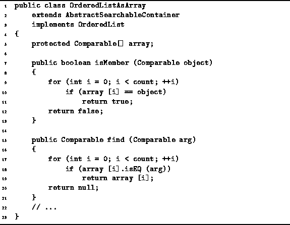

Data Structures and Algorithms
with Object-Oriented Design Patterns in Java
Data Structures and Algorithms
with Object-Oriented Design Patterns in Java
Program  defines two OrderedListAsArray class
methods which search for an object in the ordered list.
The isMember method tests whether a particular object
instance is in the ordered list.
The find method locates in the list
an object which matches its argument.
defines two OrderedListAsArray class
methods which search for an object in the ordered list.
The isMember method tests whether a particular object
instance is in the ordered list.
The find method locates in the list
an object which matches its argument.

Program: OrderedListAsArray class isMember and find methods.
The isMember method is a boolean-valued method
which takes as its argument a Comparable object.
This method compares the argument one-by-one the contents of the array.
Note that this method tests whether a particular object instance
is contained in the ordered list.
In the worst case, the object sought is not in the list.
In this case, the running time of the method is O(n),
where  is the number of items in the ordered list.
is the number of items in the ordered list.
The find method also does a search of the ordered list.
However, it uses the isEQ method to compare the items.
Thus, the find method searches the list
for an object which matches its argument.
The find method returns the object found.
If no match is found,
it returns null.
The running time of this method depends on the time required
for the comparison operator,  .
In the worst case, the object sought is not in the list.
In this case the running time is
.
In the worst case, the object sought is not in the list.
In this case the running time is  .
For simplicity, we will assume that the comparison
takes a constant amount of time.
Hence, the running time of the method is also O(n),
where
.
For simplicity, we will assume that the comparison
takes a constant amount of time.
Hence, the running time of the method is also O(n),
where  is the number of items in the list.
is the number of items in the list.
It is important to understand the subtle distinction between the search done by the isMember method and that done by find. The isMember method searches for a specific object instance while find simply looks for a matching object. Consider the following:
Comparable object1 = new Int (57); Comparable object2 = new Int (57); List list = new OrderedListAsArray (1); list.insert (object1);This code fragment creates two Int class object instances, both of which have the value 57. Only the first object, object1, is inserted into the ordered list list. Consequently, the method call
list.isMember (object1)returns true; whereas the method call
list.isMember (object2)returns false.
On the other hand, if a search is done using the find method like this:
Comparable object3 = list.find (object2);the search will be successful! After the call, object3 and object1 refer to the same object.
 Copyright © 1998 by Bruno R. Preiss, P.Eng. All rights reserved.
Copyright © 1998 by Bruno R. Preiss, P.Eng. All rights reserved.